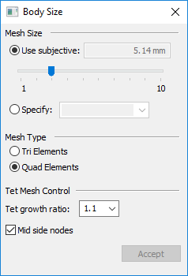
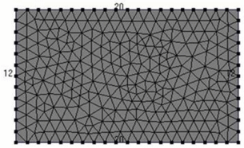
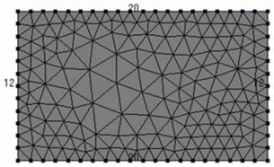
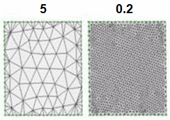

Body Size dialog box
The Body Size dialog box is displayed when you choose the Simulation tab→Mesh group→ Body Size command to refine the mesh applied to an existing body. Not all options are available for all mesh types.
See Mesh sizing to learn about refining the mesh.

- Mesh Size
-
- Use Subjective
-
Uses the value set by the slider on the command bar to specify mesh size. Values range from 1 through 10; the default value is 3.
- Specify Size
-
Applies the mesh size value specified in the box, using the model units of length.
- Mesh Type
-
Quadrilateral meshes are more accurate than triangle meshes. When meshing a surface or mid-plane, the default mesh type is Quad elements.
- Tri elements
-
Specifies that the mesh be created only from triangles.
Tip:You need a higher density triangle mesh to get the same results as a quad mesh.
- Quad elements
-
This option will generate quadrilateral elements whenever possible. Triangles are created wherever quadrilaterals cannot meet the specified boundary mesh sizes, and wherever a quadrilateral would be severely distorted.
You can override the default 60 degree allowable distortion with any value that you want. Lower distortion values will result in more triangles.
Note:You always get at least one triangle if you specify an odd number of nodes on the surface.
- Tet Mesh Control
-
Specifies mesh size options for a tetrahedral mesh.
- Tet Growth Ratio ___%
-
The Tet Growth Ratio is a mesh growth factor that is multiplied by the average size of the elements around the perimeter of the surface. This value is used as the target size of all the elements in the interior of the surface.
-
To decrease the size of the elements in the interior of the surface, use a number between 0.5 and 1.
Example:Tet Growth Ratio=1.0
When meshing thin solid bodies, set the Tet Growth Ratio to 1.0 to prevent mesh growth towards the interior of the solid.

-
To increase the size of the elements formed in the interior of the surface, use a value above 1, with a maximum of 100.
Example:Tet Growth Ratio=2.0

Example:The following illustration compares the resulting mesh element sizes when two different mesh growth factors are used: 5.0, and 0.2.

If you need to form larger or smaller tetrahedral elements than this ratio will allow, re-mesh the surfaces of the solid with a finer or coarser mesh.
-
- Midside Nodes
-
Set this option to create mid-side nodes in the tetrahedral mesh. Mid-side nodes provide a higher degree of accuracy.
When this option is cleared, linear mesh elements are created.
Note:You should almost always leave this option on. Four-noded tetrahedral elements can give inaccurate results.
- Accept
-
Applies the current sizing value.
-
If the model contains a single part or sheet metal body, the geometry is selected automatically.
-
In an assembly model, you must select one or more bodies to be sized before you can click Apply.
-
How do I
Mesh the modelActivity: Use subjective mesh sizing
Activity: Apply a surface mesh to a sheet metal part
Activity: Size the mesh on an edge
Activity: Size the mesh on a surface
Learn more
MeshesMesh sizing
Examining the mesh
Identifying areas of poor mesh quality
Look up more details
Mesh dialog boxMesh Options dialog box
Edge Size dialog box
Surface Size dialog box
Check Element Quality